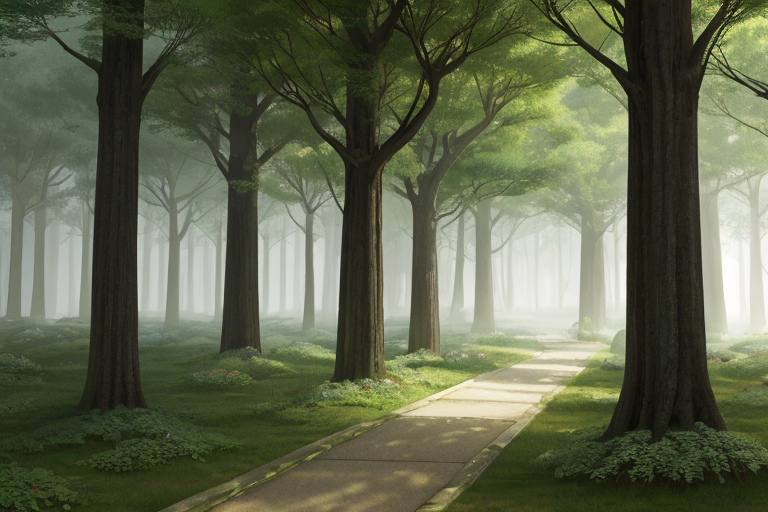
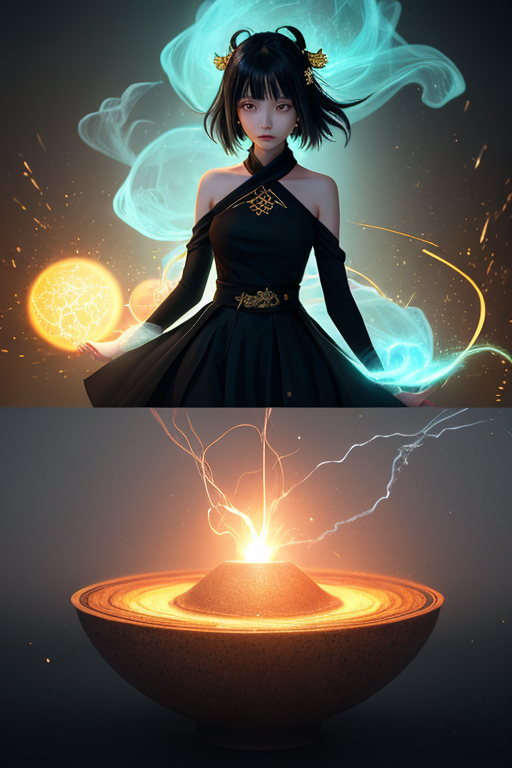
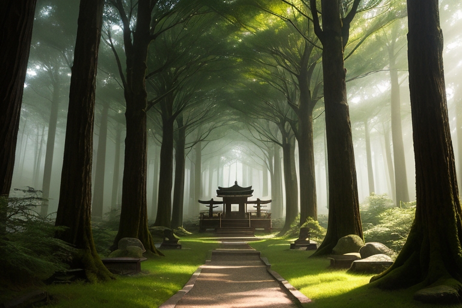
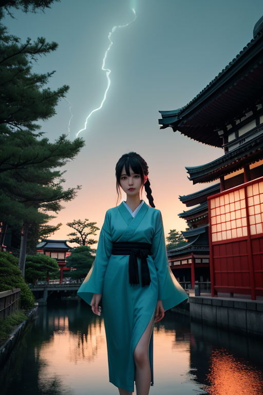
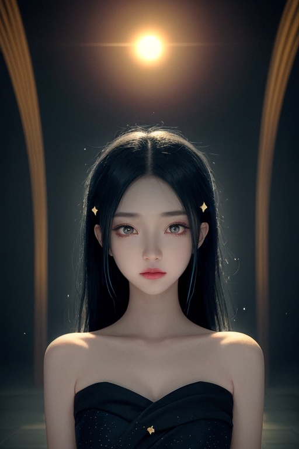

第一章 現実の東京
あなたはまだ気づいていない。この土地にも、王がいることを。
明治神宮の森は、都心の喧騒を吸い込む深い緑の海だ。参道を歩く人々の足音は、舗装された道に消え、鳥の声だけが濃い空気を切り裂く。ここは、歪みの列島の中心でありながら、稀な静寂を保つ聖域である。その静けさの底で、巨大な歪みは絶えず蓄積され、微細な振動となって地中を伝わっている。
その振動を、黒と金と赤の三重円の紋章が感知する。トキオニア・アークスは、森の梢に立つ。彼の目には、この土地の過去の断層、関東大震災の記憶、空襲の熱風が焼き付いた地層が、幾重にも重なって見える。王の役目は、それを消すことではない。増幅しすぎないよう、ほんの少し、速度を調整することだ。
彼は手をかざす。次の瞬間、森の木々のざわめきが、ほんの一呼吸分だけ遅れた。それは進化でも消耗でもない、ただの「調整」である。彼自身、その違いをまだ理解できずにいた。

第二章 歪みの兆候
浅草寺の境内は、朝の祈りに満ちていた。線香の煙がゆるやかに立ち昇り、人々の願いが静かに積み重なる。トキオニア・アークスは、その祈りのエネルギーを感じ取っていた。それは、この都市の膨大な欲望や焦燥とは異質な、深く静かな流れだった。彼は、その流れが都市全体の「歪み」をわずかに中和していることを知っている。
しかし今日、その流れに乱れがあった。祈りのエネルギーが、渋谷のスクランブル交差点から流れ込む、せわしない時間の圧力によって、かすかに撹拌されていた。加速と静寂が衝突する、目に見えない軋み。
「王、浅草の『緩やかさ』が、0.3％減衰しています」
妖精クロノアークが、無機質に報告する。
「原因は？」
「秋葉原を起点とする、情報取得速度の異常な加速です。人々の『待てない』という感情が、物理的な時間に干渉を始めています」
トキオニアは目を閉じた。速さは進化をもたらすか？ 彼の王国のテーマそのものが、今、彼に問いかけているようだった。彼は効率を尊び、遅滞を嫌う。それゆえ、この祈りの場の「遅さ」が侵食されていくことに、なぜか胸が締め付けられるのか。それは、感情という消耗品なのか。

第三章 王の葛藤
明治神宮の森は、深い沈黙に包まれていた。トキオニアは、鬱蒼とした木々の間を一人で歩く。ここには、彼が支配する「加速」の気配はほとんどない。むしろ、時間が粘り気を帯び、ゆっくりと滴り落ちていくような感覚。彼の内側で、二つの音が響いていた。一つは、渋谷の交差点のように絶え間なく流れる、焦燥のリズム。もう一つは、この森の、根を張るような深い静寂。
彼は自問した。これまで自分が微調整してきた「速さ」は、何だったのか。関東大震災の時、崩れ落ちる建物の衝撃波をほんの一瞬遅らせ、逃げ惑う人々に数秒の余裕を与えた。それは進化か？ それとも、ただ破滅へのカウントダウンを、無意味に延ばしただけの消耗か。東京大空襲の熱風を、わずかながら分散させたその行為は、結果として、この復興と欲望の加速度を生んだ一因ではないか。
彼は、自らの紋章である加速する三重円を掌に浮かべた。黒い円環は焦り、金は効率、赤は……かつては無かった、この胸の疼き。感情は、効率を阻害する消耗品に違いない。それなのに、なぜこの森の「遅さ」が、今、かけがえのないものに思えるのか。答えは出ない。ただ、彼の内側で、二つのリズムが溶け合わずに、静かに反響し続けていた。

第四章 妖精との対話
浅草寺の奥、観音堂の裏手にある小さな池のほとりで、アークレアは静かに言った。
「王よ、あなたは『祈り』を、非効率な時間の浪費とお考えでしょう」
彼女の体を流れる微かな電気の煌めきが、水面に映った。
「しかし、この都市の感情はあまりに濃密です。満員電車の軋み、スクリーンに映る無数の欲望、再開発の重機の唸り……それらすべてが、目に見えない歪みを生み出しています」
彼女は手を伸ばし、池の水面に触れた。波紋がゆっくりと広がる。
「祈りは、その歪みを『分散』させるのではなく、一度『沈殿』させる行為です。速さだけが進化ではない。明治神宮の森の静寂も、秋葉原の熱狂も、どちらもこの都市の『呼吸』です。一方だけを加速させ、他方を切り捨てれば、バランスは崩れます」
トキオニアは黙って聞いていた。妖精の言葉は、彼の焦燥を直接鎮めるものではなかった。むしろ、その焦燥こそが、調整すべき対象なのだと気付かせるものだった。
「消耗とは、止まることを忘れた加速のことかもしれません」とアークレアは呟いた。

第五章 微調整と余韻
トキオニア・アークスは、浅草寺の境内に立っていた。深夜の闇は、昼間の喧噪を洗い流し、わずかな風が香炉の灰を揺らす。彼は目を閉じ、掌をかざした。指先から、目に見えない微細な波紋が、この巨大な都市の基盤へと広がっていく。それは物理的な歪みの補正ではない。人々の心に蓄積された焦燥の波長、欲望の加速によって生じた精神的な「ひずみ」を、ほんの少しだけ和らげるためのものだ。速さは進化か消耗か。その答えは、彼自身が問い続けることであり、問いを止めないことそのものが、微調整なのだと、ようやく理解し始めていた。
彼の紋章、加速する三重円が微かに輝く。黒は深淵、金は欲望、赤は生命。すべてを含み、すべてを加速させながら、今、ここで、ほんの一瞬、静寂に同調する。消耗とは止まることの忘却。ならば、この一瞬の「止まり」こそが、次の呼吸を生む。
彼は何も解決しなかった。ただ、今夜も、東京という巨大な生き物が、少しだけ安らかに眠れるよう、見えない波を整えた。
あなたの町にも、王がいる。